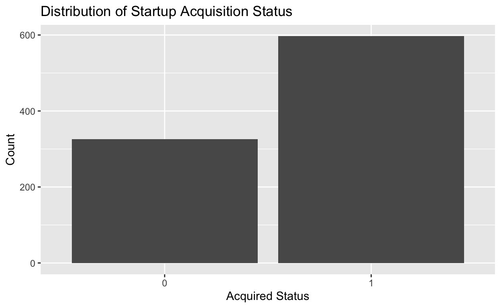
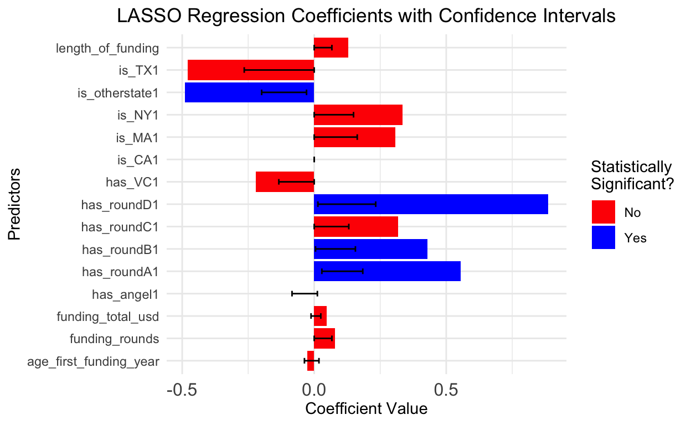

My final project
What factors predict the success of a startup? The success of a startup is frequently gauged by its acquisition status. Being acquired generally signifies market validation of the startup’s offerings, suggesting that its products, services, or technology have met critical approval. Furthermore, an acquisition implies that the acquiring company sees value in what the startup offers and believes it can further scale or monetize its value. Many times, when a startup is acquired, it increases in value. However, how do we predict whether or not a company will be acquired? What factors matter?
I hypothesize that when a company receives funding in early rounds of its fund raising process, it is more likely to be acquired. Early-round funding often signifies that investors see potential in the startup’s idea, market opportunity, and founding team. This validation can attract further attention and resources which could ultimately lead to a successful acquisition. I believe this research project is interesting because one in ten startups fail. However, those that succeed have the potential to dramatically transform the world. Successful startups can evolve into multi-billion-dollar businesses, introducing groundbreaking innovations and reshaping industries. Pinpointing the factors that contribute to this success is vital for investors to make informed decisions and for startups to align their strategies for higher chances of success.
I am using a dataset I discovered on Kaggle.com. This dataset has 923 observations and 50 variables. Each observation is associated with a different startup. The binary variables in this dataset have been categorized through expert encoding, a process where professionals systematically categorize data based on domain expertise. Although it is not explicitly stated, I assume that the quantitative variables in this dataset are derived from publicly available data about each startup. The key dependent variable in my analysis is ‘Acquired’. This is a binary indicator coded by experts, where a value of 1 signifies a startup was acquired, and 0 indicates it closed down. The key independent variables include both quantitative and binary variables. The quantitative variables, such as ‘age_first_funding_year’, ‘funding_rounds’, ‘funding_total_usd’, and ‘length_of_funding’, likely reflect objective, numerical data about the startups. The binary variables, including ‘has_VC’, ‘has_angel’, ‘has_roundA’ through ‘has_roundD’, and state-specific indicators, encoded by experts, denoting specific characteristics of each startup.
The key independent variables are are as follow: “age_first_funding_year” – quantitative variable that measures the age a start up is when it first receives funding “funding_rounds” – quantitative variable that measures the number of funding round a startup has “funding_total_usd” – quantitative variable that measures the total amount of money in USD a company has raised “length_of_funding” – quantitative variable that measures how the number of years a company has actively been receiving funding “has_VC” – binary variable equal to one if a company has VC funding and zero if not “has_angel” – binary variable equal to one if a company has angel funding and zero if not. “has_roundA” – binary variable equal to one if a company has series A funding and zero if not. “has_roundB” – binary variable equal to one if a company has series B funding and zero if not. “has_roundC” – binary variable equal to one if a company has series C funding and zero if not. “has_roundD” – binary variable equal to one if a company has series D funding and zero if not. “is_CA” - binary variable equal to one if the company is in CA and zero if not “is_TX” - binary variable equal to one if the company is in TX and zero if not “is_MA” - binary variable equal to one if the company is in MA and zero if not “is_NY” - binary variable equal to one if the company is in NY and zero if not “is_otherstate” - binary variable equal to one if the company is in another state other than CA, TX, MA, or NY and zero if not.
startupdata <- startupdata |>
mutate(length_of_funding = age_last_funding_year - age_first_funding_year)for (col in names(startupdata)) {
if (is.numeric(startupdata[[col]])) {
startupdata[[col]][is.na(startupdata[[col]])] <- median(startupdata[[col]], na.rm = TRUE)
}
}
# convert categorical variables
categorical_cols <- c("state_code", "city", "category_code", "zip_code", "is_CA", "is_NY", "is_MA", "is_TX", "is_otherstate", "is_software", "is_web", "is_mobile", "is_enterprise", "is_advertising", "is_gamesvideo", "is_ecommerce", "is_biotech", "is_consulting", "is_othercategory", "has_VC", "has_angel", "has_roundA", "has_roundB", "has_roundC", "has_roundD")
startupdata[categorical_cols] <- lapply(startupdata[categorical_cols], factor)
# some minor fature engineering
startupdata$total_funding <- startupdata$funding_rounds * startupdata$funding_total_usd
getmode <- function(v) {
uniqv <- unique(v)
uniqv[which.max(tabulate(match(v, uniqv)))]
}
# replace NA with mode for categorical variables
for (col in categorical_cols) {
mode_value <- getmode(startupdata[[col]][!is.na(startupdata[[col]])])
startupdata[[col]][is.na(startupdata[[col]])] <- mode_value
}
na_count <- sapply(startupdata, function(x) sum(is.na(x)))library(caret)
set.seed(02138)
# Split data into training / testing set
splitIndex <- createDataPartition(startupdata$Acquired, p = 0.80, list = FALSE, times = 1)
train_data <- startupdata[splitIndex, ]
test_data <- startupdata[-splitIndex, ]
# separate X (predictors) and y (response)
X_train <- train_data %>% dplyr::select(-Acquired)
y_train <- train_data$Acquired
X_test <- test_data %>% dplyr::select(-Acquired)
y_test <- test_data$Acquired# non-binary predictors
non_binary_predictors <- c("age_first_funding_year", "funding_rounds", "funding_total_usd", "length_of_funding")
# scale non-binary predictors in training data
train_data_scaled <- scale(train_data[non_binary_predictors])
# scale non-binary predictors in test data
test_data_scaled <- scale(test_data[non_binary_predictors], center = attr(train_data_scaled, "scaled:center"),
scale = attr(train_data_scaled, "scaled:scale"))
# replace non-binary columns in train_data and test_data with the scaled version
train_data[non_binary_predictors] <- train_data_scaled
test_data[non_binary_predictors] <- test_data_scaledacquired_counts <- table(startupdata$Acquired)
ggplot(data = as.data.frame(acquired_counts), aes(x = Var1, y = Freq)) +
geom_bar(stat = "identity") +
xlab("Acquired Status") +
ylab("Count") +
ggtitle("Distribution of Startup Acquisition Status")
The above a bar plot describes the dependent variable, Acquired. Because Acquired is binary, this plot counts the frequency of observations in the dataset that were Acquired (Acquired = 1) or Closed (Acquired = 0). As we can see, this variable is unbalanced. There are far more companies in the dataset that have been acquired than have closed down. Therefore, before doing a LASSO regression analysis, I must weight the dependent variables that are equal to zero more than those equal to one.
I ran a LASSO regression model on my data to determine the significance of each key independent variable on the response variable, Acquired. Before modeling, I first had to scale my quantitative variables to ensure they could be used in a model alongside binary variables. Next, to ensure that the model did not bias the majority class in the outcome variable, I computed class weights and applied them to my model to avoid having a model that overly favored the majority class. Then, I applied LASSO regression to the training data, which reduced the coefficients of less important variables to zero. I then validated my model’s performance by calculating its training and testing accuracy. My lasso regression model outputs coefficients for each independent variable which estimate the impact of independent variable has on the likelihood that the dependent variable, Acquired, is equal to 1.
Note: I know these regression techniques were not taught in Gov50, but I learned them while taking CS109a this semester and wanted to use them in this analysis.
library(glmnet)
predictor_list <- c("age_first_funding_year", "funding_rounds", "funding_total_usd", "length_of_funding",
"is_CA", "has_VC", "has_angel", "has_roundA", "has_roundB", "has_roundC", "has_roundD", "is_TX", "is_MA", "is_NY", "is_otherstate")
# Calculate class weights bc dataset is imbalanced
class_counts <- table(train_data$Acquired)
class_weights <- ifelse(names(class_counts) == "0", max(class_counts) / class_counts, 1)
names(class_weights) <- names(class_counts)
# Assign weights to each observation
train_weights <- class_weights[as.character(train_data$Acquired)]
X_train <- model.matrix(~ . - 1, data = train_data[, predictor_list])
y_train <- train_data$Acquired
X_test <- model.matrix(~ . - 1, data = test_data[, predictor_list])
y_test <- test_data$Acquired
# determine regularization strengths (lamda)
lambda_list <- 10^seq(-4, 4, by = 1)
set.seed(02138)
logit_lasso <- cv.glmnet(X_train, y_train, alpha = 1, lambda = lambda_list, family = "binomial", weights = train_weights)
# predict on training & test data
y_train_pred <- predict(logit_lasso, newx = X_train, type = "class")
y_test_pred <- predict(logit_lasso, newx = X_test, type = "class")
# Calc. classification accuracies
logit_lasso_train_acc <- mean(y_train_pred == y_train)
logit_lasso_test_acc <- mean(y_test_pred == y_test)
# print
cat("The intercept and coefficients for the 'logit_lasso' model are:\n")The intercept and coefficients for the 'logit_lasso' model are:17 x 1 sparse Matrix of class "dgCMatrix"
s1
(Intercept) -0.39462732
age_first_funding_year -0.02550144
funding_rounds 0.07904590
funding_total_usd 0.04762872
length_of_funding 0.12825777
is_CA0 .
is_CA1 .
has_VC1 -0.22181907
has_angel1 .
has_roundA1 0.55532441
has_roundB1 0.42914058
has_roundC1 0.31765608
has_roundD1 0.88726092
is_TX1 -0.48000766
is_MA1 0.30734937
is_NY1 0.33362124
is_otherstate1 -0.49017118cat("\nThe classification accuracies for 'logit_lasso' are:\n\n")
The classification accuracies for 'logit_lasso' are: Train 0.6536 Test 0.6033After I determined the coefficients of my LASSO logistic regression model, I ran a bootstrap analysis to estimate the confidence intervals of these coefficients. Computing the confidence intervals for each coefficient, allowed me to determine which coefficients are statistically significant.
sample_fit <- function(data, idx) {
with(data, {
sample <- data[idx,]
sample[, non_binary_predictors] <- scale(sample[, non_binary_predictors])
X <- model.matrix(~.-1, data = sample[, predictor_list])
y <- sample$Acquired
fit <- glmnet(X, y, alpha = 1, lambda = logit_lasso$lambda.min)
return(coef(fit))
})
}
# Bootstrap to get CIs
coefs <- matrix(NA, nrow = 1000, ncol = 17)
for(i in 1:1000) {
idx <- sample(nrow(train_data), replace = TRUE)
coef <- sample_fit(train_data, idx)
# convert coefficients to numeric vector before assigning
coefs[i,] <- as.numeric(coef)
}
# calc. CIs
cis <- apply(coefs, 2, function(x) {
quantile(x, c(0.025, 0.975))
})
cis_adjusted <- cis[, -c(1, 6)]I created a table called “LASSO Regression Model Coefficient Outputs and Confidence Intervals table” which displays the coefficient estimations of each predictor variable, the confidence interval of the coefficient and says whether or not it is statistically significant. I examined 15 predictor variables, whose estimated coefficients can be seen in the column entitled “Predictor_Variable.” The larger the magnitude of a coefficient, the larger effect it has on the dependent variable, acquired. The lasso model brought predictors is_CA, and has_angel to zero. This means that whether or not it exists in the state of California, or whether or not it has angel funding, have no impact on a company being acquired or not.
From this table, we see that only 4 predictors out of the 15 are statistically significant. These include has_roundA, has_roundB, has_roundD, and is_otherstate. Out of these three, the strongest predictor of Acquired is has_roundD, with a coefficient of 0.887, indicating a substantial positive impact on a company being acquired. If a company is able to make it to series D funding, it is more likely to be acquired. Holding all other variables constant, having completed Round D funding is associated with an increase in the log odds of being ‘Acquired’ by 0.887 units. This coefficient has a confidence interval from 0.014 to 0.233. Because zero is not included in this range, this variable is statistically significant.
The second strongest predictor of Acquired is has_roundA, with a coefficient of 0.545. This indicates that if a company is able to secure series A funding– which is one of the earliest forms of funding a company can get – it is more likely to be acquired. Holding all other variables constant, having completed Round A funding is associated with an increase in the log odds of being ‘Acquired’ by 0.545 units. This coefficient’s confidence interval ranges from 0.031 to 0.183, not including zero, suggesting a positive influence on the outcome. Because zero is not included in this range, this variable is statistically significant.
The third strongest predictor of Acquired is is_otherstate, with a coefficient of -0.505. This indicates that if a startup is located in a state other than California, Massachusetts, New York or Texas, it is less likely to be acquired. Holding all other variables constant, if is_otherstate is equaling 1 is associated with a decrease in the log odds of being ‘Acquired’ by 0.505 units. This negative coefficient is statistically significant since its confidence interval is entirely below zero (-0.207 to -0.036), suggesting a negative association with the outcome, acquired.
The fourth strongest predictor of Acquired is has_roundB1, with a coefficient of .429. This indicates that if a start up gets series B funding, it is more likely to be acquired. Holding all other variables constant, having completed Round B funding is associated with an increase in the log odds of being ‘Acquired’ by 0.429 units. This coefficient has a confidence interval from 0.005 to 0.156. Because zero is not included in this range, this variable is statistically significant.
All other predictors have confidence intervals that include zero, marking them as statistically non-significant according to this analysis. This means we cannot confidently say they have an effect on whether or not a company is acquired , given the data. The confidence intervals calculated for the coefficients in this analysis are 95% confidence intervals. This means that if we were to repeat this study many times, we would expect the true coefficient value to fall within this range 95% of the time, under the assumption that the model and its assumptions are correct. The alpha level (α) of 0.05 is used in this analysis, representing a 5% risk of concluding that a coefficient is statistically significant when it is not (Type I error).
It is important to note that statistically significant coefficients from a LASSO regression model should NOT be interpreted causally. In the context of this analysis, statistical significance means that there is evidence that predictors has_roundD, has_roundA, is_otherstate, and has_roundB have an association (either positive or negative) with the response variable, Acquired. However, establishing causality requires doing more analysis. A difference-in-differences analysis or a randomized control study, for example, would control for all unobserved confounders and could help us determine causality. In my analysis, we have determined that correlation exists between statistically significant variables and the response variable, Acquired. We have not, however, determined causation because we have not controlled for confounding that might exist.
library(knitr)
# take coefficients from the LASSO model
coefficients_matrix <- as.matrix(coef(logit_lasso, s = "lambda.min"))
# extract row names (variable names)
variable_names <- rownames(coefficients_matrix)
# exclude the intercept and is_CA0
variable_names <- variable_names[variable_names != "(Intercept)" & variable_names != "is_CA0"]
# extract corresponding coefficients
original_coefs <- coefficients_matrix[variable_names, , drop = FALSE]
# convert to vector
original_coefs_vector <- as.vector(original_coefs)
# check if lengths match
if (length(variable_names) != length(original_coefs_vector)) {
stop("Mismatch in the number of variables and coefficients")
}
ci_df <- as.data.frame(t(cis_adjusted))
# results table
results_table <- data.frame(
Predictor_Variable = variable_names,
Coefficient = original_coefs_vector,
CI_Lower = ci_df[, 1],
CI_Upper = ci_df[, 2]
)
results_table$Statistically_Significant <- with(results_table, CI_Lower * CI_Upper > 0)
results_table$Coefficient <- round(results_table$Coefficient, 3)
results_table$CI_Lower <- round(results_table$CI_Lower, 3)
results_table$CI_Upper <- round(results_table$CI_Upper, 3)
# the results!!!
kable(results_table, caption = "LASSO Regression Model Coefficient Outputs and Confidence Intervals", align = 'c', format = "markdown")| Predictor_Variable | Coefficient | CI_Lower | CI_Upper | Statistically_Significant |
|---|---|---|---|---|
| age_first_funding_year | -0.026 | -0.037 | 0.018 | FALSE |
| funding_rounds | 0.079 | 0.000 | 0.067 | FALSE |
| funding_total_usd | 0.048 | -0.012 | 0.025 | FALSE |
| length_of_funding | 0.128 | 0.000 | 0.067 | FALSE |
| is_CA1 | 0.000 | 0.000 | 0.000 | FALSE |
| has_VC1 | -0.222 | -0.134 | 0.000 | FALSE |
| has_angel1 | 0.000 | -0.084 | 0.012 | FALSE |
| has_roundA1 | 0.555 | 0.029 | 0.184 | TRUE |
| has_roundB1 | 0.429 | 0.005 | 0.156 | TRUE |
| has_roundC1 | 0.318 | 0.000 | 0.131 | FALSE |
| has_roundD1 | 0.887 | 0.014 | 0.233 | TRUE |
| is_TX1 | -0.480 | -0.265 | 0.000 | FALSE |
| is_MA1 | 0.307 | 0.000 | 0.163 | FALSE |
| is_NY1 | 0.334 | 0.000 | 0.149 | FALSE |
| is_otherstate1 | -0.490 | -0.199 | -0.029 | TRUE |
The plot visually reinforces the information presented in the regression table by displaying the coefficients of the predictors along with their confidence intervals, and highlighting which coefficients are statistically significant. As mentioned above, has_roundD, has_roundA, is_otherstate, and has_roundB are the only statistically significant predictors. I was surprised to see how little of an effect the total amount funding a company gets has on its acquisition potential. Since, this is not a statistically significant predictor, we can’t say what type of effect it has for certain, but based on this initial analysis, it seems like the amount of total funding a company gets isn’t THAT determinate of its potential to be acquired.
ggplot(results_table, aes(x = Predictor_Variable, y = Coefficient, fill = Statistically_Significant)) +
geom_bar(stat = "identity", position = position_dodge()) +
geom_errorbar(aes(ymin = CI_Lower, ymax = CI_Upper), width = 0.25) +
scale_fill_manual(values = c("FALSE" = "red", "TRUE" = "blue"),
name = "Statistically\nSignificant?",
labels = c("No", "Yes")) +
theme_minimal() +
theme(axis.text.x = element_text(vjust = 0.6, size = 12),
plot.title = element_text(hjust = 0.5)) +
labs(title = "LASSO Regression Coefficients with Confidence Intervals",
x = "Predictors",
y = "Coefficient Value") +
coord_flip()
In my analysis, I have found that variables has_roundD, has_roundA, is_otherstate, and has_roundB have statistically significant associations with the response variable, Acquired. My results show that when a startup receives funding at the series D stage, which is one of the last stages a company can receive funding from a venture capital firm before IPOing, it is more likely to be acquired. Intuitively this makes sense, given that many companies that were bound to fail would have done so before reaching series D. Thus, the companies that make it this far are more likely to have proven track records or a market presence, which means they are more likely to be acquired.
My results also show that when a startup receives funding at the series A stage, it is more likely to be acquired. In my dataset, series A funding is the earliest measured point a company could have received funding. This finding supports my hypothesis that companies who receive funding early on in their fundraising processes, are more likely to be acquired. However, as mentioned above, my hypothesis was not entirely correct, as it appears that receiving funding at later series, notably series D, is even more critical. Furthermore, this model shows that even earlier forms of financing, like angel funding (has_angel), is not a statistically significant predictor and is brought to zero by the lasso model. Though this analysis shows that there is some truth to my hypothesis that earlier funding leads to a company’s acquisition, it is not the whole story because having series B and D funding are also important determinates.
My results also indicate that when a startup is located outside of innovation hubs like California, New York, Massachusetts, and Texas, they are less likely to be acquired. This finding initially surprised me, but makes sense intuitively. Start ups outside of these known innovation hubs likely have less access to sources of funding because of a lower concentration of venture capital firms and investors in these areas, which might make it difficult to drive growth and ultimately be acquired. It is also likely that there are fewer networking opportunities outside of these cities, perhaps making it difficult to connect with potential partners or people who can facilitate deals.
There are several limitations in this analysis and threats to inference. First of all, there were several cases of missingness in my dataset. I imputed values for these missing numbers by taking the median of quantitative variables and the mode for categorical variables. However, I assumed that data was missing completely at random. If this was not the case, and the missingness instead related to other observed data or the missing data itself, ignoring these relationships may have skewed my analysis. Furthermore, while LASSO helped in variable selection by penalizing less important variables, there could still be confounding variables that are not included in the dataset. These unmeasured confounders can bias the estimated relationships. If I have more time and money, I would try to collect more comprehensive data to include potential confounders and apply causal inference techniques to better adjust for these. In addition, my current analysis does not establish causation. The statistically significant associations found by my LASSO model do not imply that the predictors cause the outcome. If I had more money and time I would design a randomized control trial to measure the factors that contribute to a start up’s acquisition more precisely.